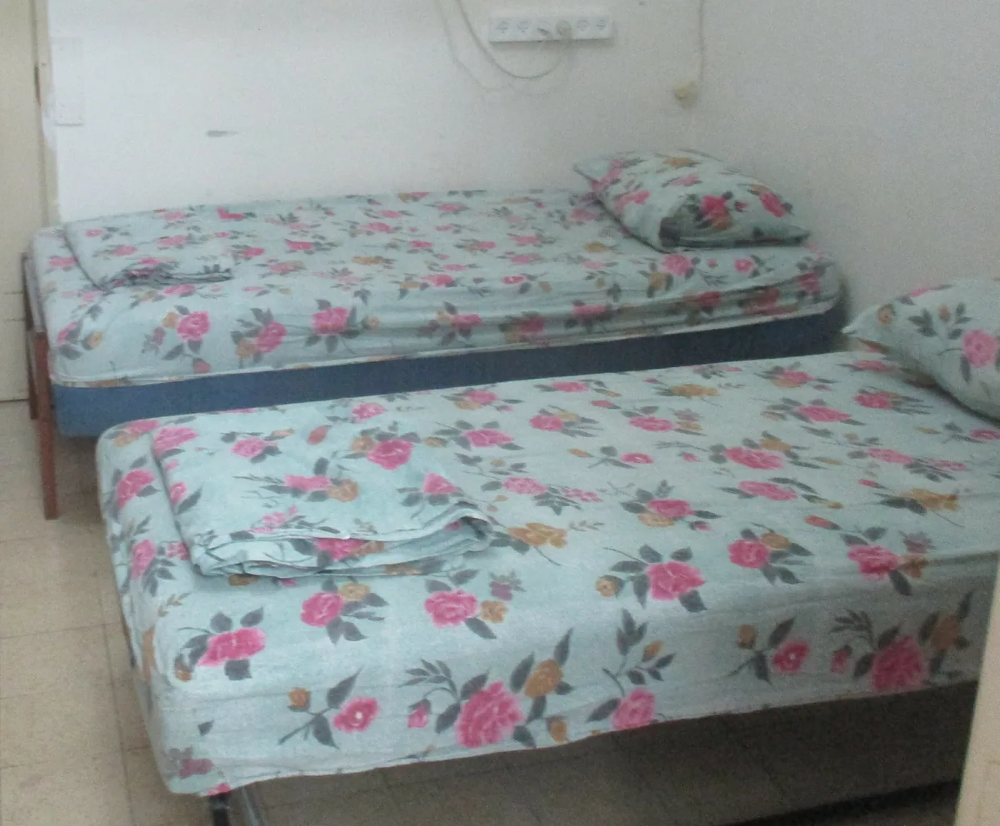

📚
ספרים וקטלוגים
קטלוג הספרים, ספרים נוספים ומפתחות לכל החומרים
7 פריטים
קטלוגים ומפתחות (3)
ספרים נוספים (4)

ספרים נוספים
לכו נרננה תורת התשובה והגאולה במשנת הגר''א וממשיכי דרכו. קרא עוד מאמרים על ארץ ישראל

ספרים נוספים – תורת חיים
ספרים נוספים תורת חיים - חשבון בגמרא
לכו נרננה
תורת התשובה והגאולה במשנת הגר''א וממשיכי דרכו. תורת התשובה והגאולה במשנת הגר''א וממשיכי דרכו – הסבר נפלא ומדהי…

לכו נרננה - תורת התשובה והגאולה במשנת הגר''א וממשיכי דרכו
ונטעתם - מצוות נטיעת אילנות בארץ ישראל לכו נרננה לכו נרננה תורת התשובה והגאולה במשנת הגר''א וממשיכי דרכו. תורת…